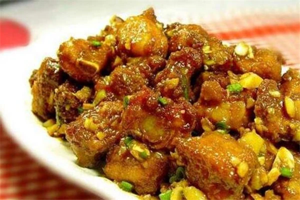

闽菜

佛跳墙
佛跳墙是闽菜十大代表菜之一，而且直到今天也有上百年的历史了，既丰富又珍贵的食材在被经过特有的工艺烹饪之后，不仅口感独一无二，而且其中所含有的丰富营养具有美容养颜的功效，还能增强人体的免疫能力。
查看详情

醉排骨
醉排骨可以说是传统的闽菜代表了，在今天流行闽菜的地区不但是很多人小时候的回忆，更是在逢年过节的时候家家户户都会准备的一道美味菜肴，其浓郁的香味，还有外脆里嫩的口感，可以毫不夸张的说只要这道菜一上桌，立马就能被清光的闽菜了。
查看详情鸡丝燕窝
鸡丝燕窝，鸡丝燕窝被大家誉为是在闽菜中一道比较具有代表性的高质量菜品了，而且在制作工艺上的考究，就更让菜品本身的格调显得非常的大方高雅了，而且细致的选材更是让口感突出了鲜嫩，虽然味道稍显得清淡，但是其确实是滋润爽口，营养价值也很高。
查看详情